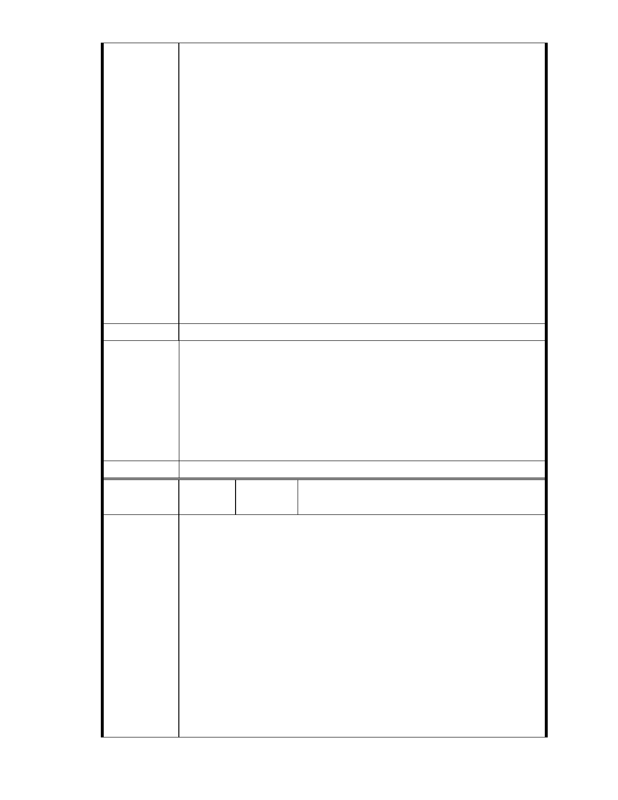

五、依據 貴會民國 95 年 10 月 11 日專案小組第六次審查會議記錄，會
議結論六、同意林委員聖忠（鍾弘遠代）發言列入紀錄：「1、
不宜變更坡地他用。2、量體限制將如何？3、本案宜列入保護區
通盤檢討，不宜個案討論，或者宜針對整個集水環境之檢討」。
故本案應採保護區通盤檢討，不宜個案討論，或者宜針對整個
集水環境之檢討。
六、 本聯盟是由一群社區裡的家庭主婦、退休居民和學生所組成，大
家自掏腰包捐出買菜錢、退休金、和打工賺來的零用錢，只希
望能用一己微薄之力希望能守護內湖珍貴的山水和我們深愛的
家園。請 貴會通知本聯盟列席參與本案後續所有會勘、審議，
並請依政府資訊公開法將會議時間、地點，及會議資料、紀錄
等相關資訊提前公開上網，俾便閱覽。
建議辦法
一、本案申請範圍於慈濟購得前已遭填平破壞作汽車停車場使用，已長
年不具保護區之功能；目前申請方案較先前方案已大幅降低開發強
市府說明
度、調整使用項目並承諾大面積滯洪設施等回饋事項，將改善地區
整體環境促進多贏發展。
二、相關陳情意見將納入本案審查人民意見，依法定程序辦理。
三、後續審理程序將要求申請人加強與在地區民、社會大眾，就基地現
況、規劃方案及環境助益作為等方面加強溝通。
委 員 會 決 議 同編號 1。
編
號 119
陳情人 陳 乃 立 （ MA201210170185 ）、 李 日 進
（MA201210180040）
主旨：
有關「變更臺北市內湖區成功路五段大湖公園北側部分保護區及道路用
地為社會福利特定專用區主要計畫案」，依據臺北市土地使用分區管制
規則第 75 條第 1 項第 2 款第 3 目規定，保護區依法得附條件允作為社會
福利設施使用，本案無須辦理保護區變更，詳如說明，敬請查照。
陳 情 理 由 說明
依據都市計畫法第 19 條第 1 項規定辦理。
依據臺北市土地使用分區管制規則第 75 條第 1 項：「在保護區內得為左
列規定之使用」，其中第 2 款第 3 目規定：「二、附條件允許使用：(三)
第八組：社會福利設施 」之規定，本案無須辦理都市計畫變更，即可依
現行法令規定於保護區內附條件作為社會福利設施使用。
- 131 -